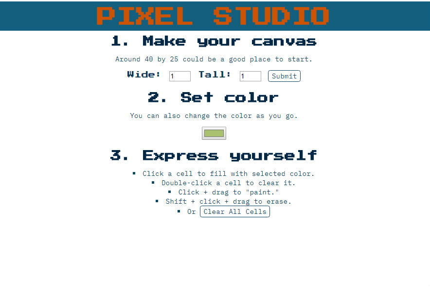
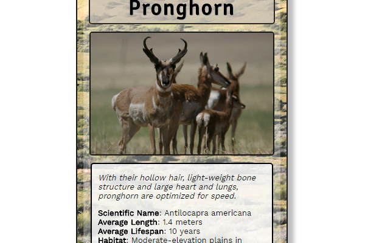

{kind=link}
Precision meets imagination.
(Image by ArniEin; accessed via Wikimedia Commons. Liscense: CC BY-SA 3.0)
{kind=link}
What I've Been Up To Lately
Object Oriented JavaScript
![Screenshot of the About page of the "What's the Next Tech Event in Seattle" website. Image shows a small view of a web page featuring a header with a blue-to-green gradient color scheme. Below the header, the main section of the page is filled with a large grey box with text inside at the top. Below the predominant top box are two more grey boxes, arranged horizontally: a larger box on the left and a small box on the right. None of the text is particularly legible to any persons due to the scale of the image.](images/next-tech-event-seattle-about.jpg)
Classic-Style Game Inspired by Frogger
Skills exercised include: Ojbect oriented JavaScipt, use ES6 class syntax and integration of code with game loop engine.
Udacity Front End Web Developer Nanodegree Project 3
Bringing it all together
About page for the "What's the Next Tech Event in Seattle?" site.
Skills exercised include: JavaScript and jQuery, HTML, CSS, combined use of grid layout and flexbox, responsive design, collaboration using GitHub and teamwork for the win.
- A Udacity Front End Web Developer Nanodegree student group project.
JavaScript and jQuery
"Pixel Studio" pixel art maker.
Skills excercised include: interactive design, JavaScript and jQuery, HTML tables and CSS.
- A Udacity Front End Web Developer Nanondegree course project.
CSS
Animal trading card featuring the pronghorn.
Skills exercised include: CSS, grid layout, HTML and designing for accsibility.
- A Udacity Front End Web Developer Nanodegree course project.